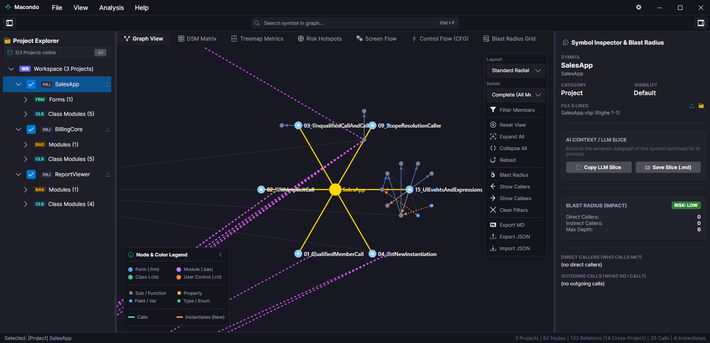

Deterministic semantic code graph and Blast Radius impact analyzer for legacy codebases, currently specialized for Visual Basic 6.0. 100% offline, absolute privacy, engineered for AI-guided migration.

Exhaustive AST parsing of .vbp, .frm, .bas, .cls, and .ctl files. Explore call hierarchies with 4 tailored layout algorithms.
The Blast Radius matrix recursively traces all upstream callers. Know which UI forms or business entities will be touched before editing a single line.
Extract compact, structured Markdown Repo Maps and semantic context slices ready for Claude, ChatGPT, Gemini, Copilot, etc. to guide your C#/.NET or modern architecture rewrite.
No subscriptions, no paywalls, no artificial limitations. Built as an open engineering tool for developers.
Runs 100% locally on your machine. Zero source code or telemetry ever leaves your computer.
Lightning-fast persistent disk cache: reopen complex enterprise projects with hundreds of files in milliseconds.
Download the standalone Macondo.exe for Windows. No installer or zip archive required.
Download Macondo.exe (Windows x64)